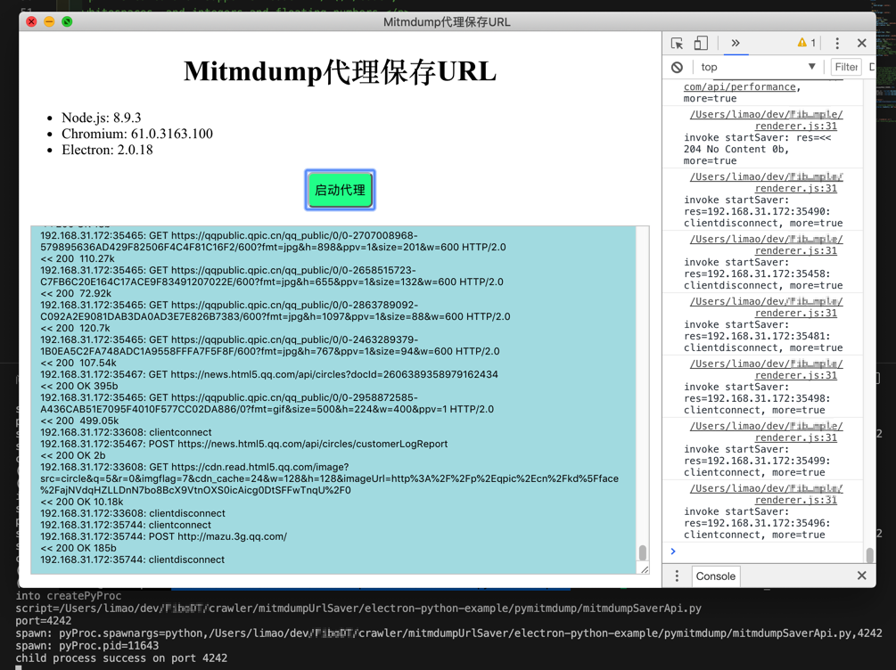

Web技术
由于Electron的开发，关于内容显示方面，来说就是Web技术的开发。所以常会涉及到一些Web技术的使用。现整理部分如下：
html的文本区域界面用于显示js中获取到的字符串
文件：electron-python-example/index.html
<!DOCTYPE html>
<html>
<head>
<meta charset="UTF-8">
<title>Mitmdump代理保存URL</title>
<style>
h1 {
text-align: center;
}
#mitm {
text-align: center;
}
#startSaver {
font-size: 14px;
height: 40px;
background-color: mediumspringgreen;
border-radius: 6px;
}
#output {
margin-top: 20px;
background-color: powderblue;
border: 1px solid #ccc;
padding: 10px;
/* width: 400px; */
/* min-width: 800px; */
width: 500px;
min-height: 300px;
/* height: auto; */
/* 可以设置一个最大高度，超出时滚动，否则，高度会被撑开 */
/* max-height: 300px; */
overflow: auto;
}
</style>
</head>
<body>
<h1>Mitmdump代理保存URL</h1>
<ul>
<li>Node.js: <script>document.write(process.versions.node)</script></li>
<li>Chromium: <script>document.write(process.versions.chrome)</script></li>
<li>Electron: <script>document.write(process.versions.electron)</script></li>
</ul>
<div id="mitm">
<button id="startSaver">启动代理</button>
<div>
<!-- <textarea readonly id="output" rows="100" cols="50"></textarea> -->
<textarea readonly id="output"></textarea>
</div>
</div>
</body>
<script>
require('./renderer.js')
// require('electron_python/electron-python-example/renderer.js')
</script>
</html>
文件：electron-python-example/renderer.js
const zerorpc = require("zerorpc")
// let client = new zerorpc.Client()
const constLargeEnoughHeartbeat = 60 * 60 * 24 * 30 * 12 // 1 Year
clientOptions = {
"heartbeatInterval": constLargeEnoughHeartbeat,
}
let client = new zerorpc.Client(clientOptions)
client.connect("tcp://127.0.0.1:4242")
client.invoke("echo", "server ready", (error, res) => {
if(error || res !== 'server ready') {
console.error(error)
} else {
console.log("server is ready")
}
})
let startElement = document.querySelector('#startSaver')
let outputElement = document.querySelector('#output')
startElement.addEventListener('click', () => {
console.log("startElement clicked")
client.invoke("startSaver", (error, res, more) => {
if(error) {
console.error("invoke startSaver: error=%s, more=%s", error, more)
} else {
console.log("invoke startSaver: res=%s, more=%s", res, more)
outputElement.textContent += "\n" + res
// outputElement.textContent += res
outputElement.scrollTop = outputElement.scrollHeight
}
})
})
效果：
